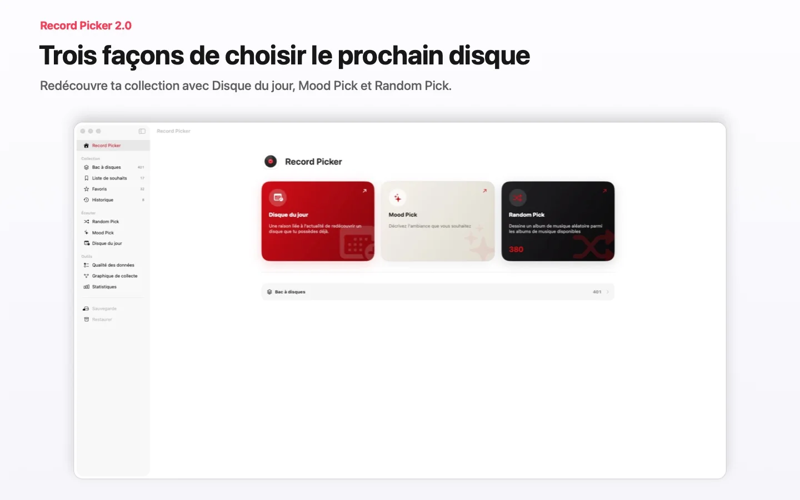
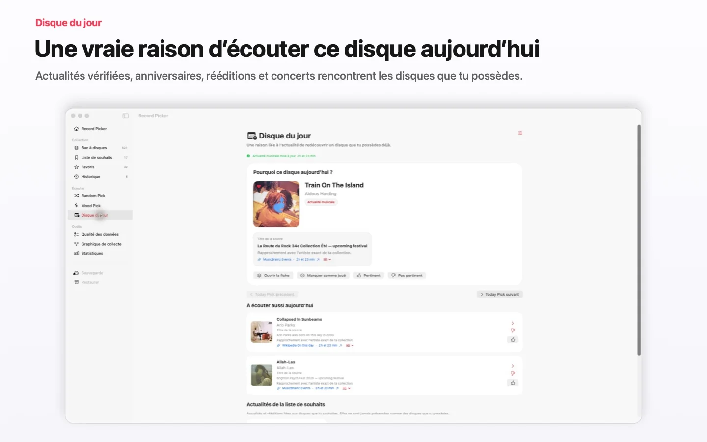
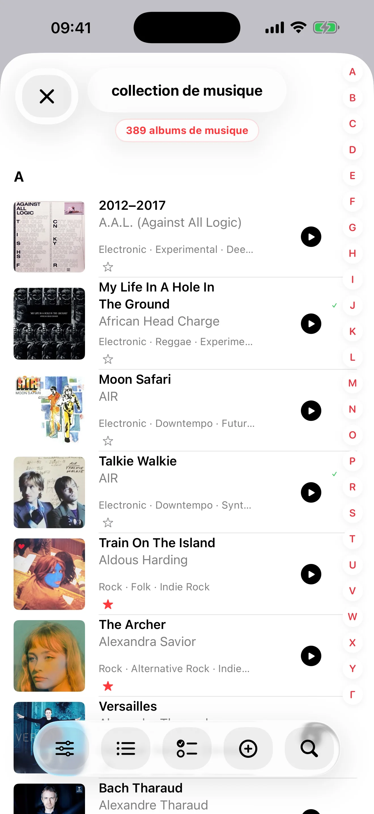
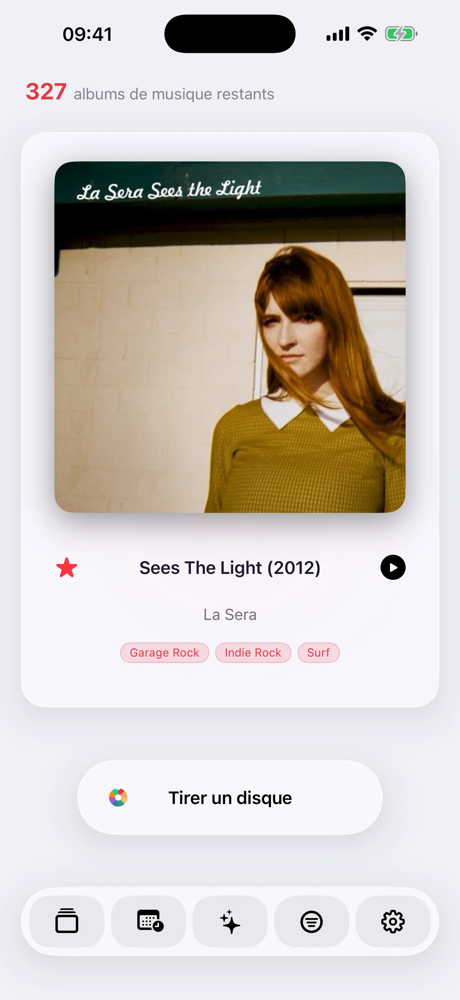
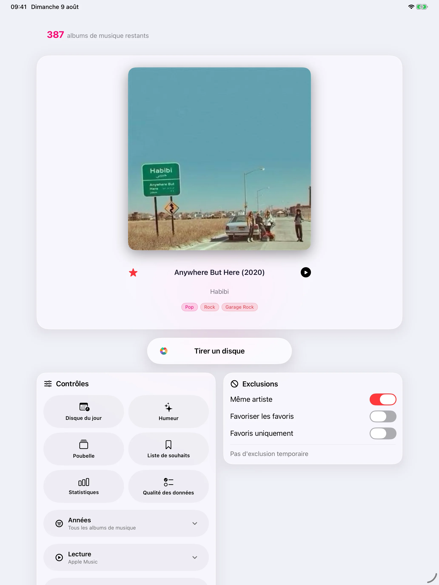
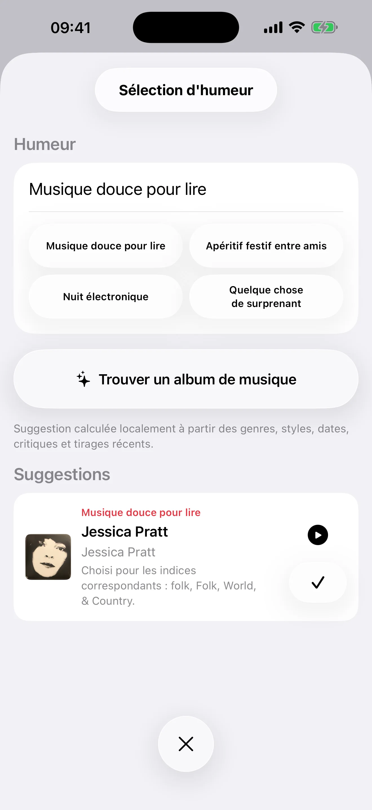

Record Picker vous aide à cataloguer, enrichir et redécouvrir votre collection de disques. Importez-la depuis Discogs, MusicBuddy ou un fichier CSV, corrigez les métadonnées, les pochettes et les doublons, puis synchronisez et sauvegardez le tout avec iCloud. Pour choisir quoi écouter, utilisez le tirage aléatoire, Mood Pick ou le Disque du jour. L’app est native sur iPhone, iPad, Apple Watch et Mac, disponible en 32 langues et gratuite jusqu’à 100 disques, avec un achat Pro définitif pour une collection illimitée.


Retrouvez ci-dessous les principales fonctionnalités de Record Picker sur iPhone, iPad, Apple Watch et Mac : modèle Free + Pro, import et export, choix d’écoute, qualité des données, synchronisation iCloud et confidentialité.

Collection bien tenue
Construisez une collection propre, vérifiable et agréable à parcourir, même quand les bases publiques ne suffisent pas.
Saisie rapide par scan de code-barres
Métadonnées via MusicBrainz et Discogs
Si MusicBrainz ne connaît pas le disque, Discogs prend automatiquement le relais
Liste de souhaits séparée du bac
Doublons, exclusions et historique consultable
Pochettes et données visuelles
Gardez une collection agréable à parcourir, avec des pochettes récupérées ou choisies par vous.
Recherche de pochettes via Cover Art Archive · iTunes Search · Deezer
Import manuel depuis Photos ou Fichiers
Recherche Internet quand une illustration manque
Restauration de l'illustration d'origine
Pochettes personnalisées quand les bases publiques ne suffisent pas

Sélecteur iPhone en mode paysage
Tournez l'iPhone pour choisir avec la pochette, les métadonnées et les commandes visibles en même temps.
Pochette à gauche et détails complets à droite
Titre, artiste, tags de genre, format, label et année d'ajout visibles
Bouton Pick centré près des métadonnées
Barre d'outils inférieure flottante, équilibrée entre la pochette et le bord de l'écran
Statistiques en trois colonnes en paysage

Tirage personnalisable
Choisissez entre un tirage purement aléatoire et un mode pondéré facultatif qui fait davantage revenir les disques moins écoutés.
Mode pondéré facultatif pour favoriser les disques moins écoutés
Filtres par année, genre, format, vitesse et favoris
Exclusions temporaires pour mettre de côté sans supprimer
Balayer la pochette vers la gauche pour tirer un nouveau disque
Balayer vers la droite pour annuler le dernier tirage, aussi sur iPad
Historique consultable pour comprendre ce qui revient

Ambiances et lecture
Choisissez par ambiance et gardez une trace d'écoute pour que la collection continue à se révéler avec le temps.
Choix par ambiance avec modèles Apple locaux quand ils sont disponibles
Correspondance locale à partir des métadonnées quand les modèles ne sont pas disponibles
Statistiques narratives avec Apple Intelligence sur l'appareil quand disponible
Historique récent des disques tirés ou écoutés
Lecture via Apple Music, Spotify, Deezer, YouTube Music, Amazon Music, SoundCloud, Qobuz et Tidal quand disponible
Apple Watch repensée
La version 1.3 transforme l'expérience au poignet avec une interface pensée pour le geste rapide.
Pochette affichée comme arrière-plan flouté
Boutons favori, annuler et tirage suivant à portée du pouce
Retour haptique dédié pour chaque action
Mise en page adaptée de 41 mm à Ultra
Synchronisation iPhone-Watch plus rapide
Navigation et analyse de collection
Parcourez, vérifiez et comprenez votre collection sans quitter l'app, avec des interfaces distinctes pour iPhone et iPad.
Navigation rapide dans le bac
Petite étoile rouge sur chaque ligne iPhone et tuile iPad pour activer ou retirer un favori
Boutons Liquid Glass unifiés
Lignes iPad lisibles et accès direct aux détails depuis les pochettes
Glisser-déposer iPad là où cela aide vraiment
Détection des doublons et contrôles de qualité
Contrôles de qualité pour années, dates d'ajout, doublons, labels, pochettes, genres, formats et pistes manquants
Complétion des genres, styles et pistes via MusicBrainz puis Discogs
Suppression par balayage dans les souhaits et l'historique AI Mood
iCloud, export et confidentialité
Les données vous suivent sur vos appareils via iCloud, sans fournisseur d'IA tiers ni IA cloud.
Bac, souhaits, doublons résolus, exclusions, historique et suppressions restaurables synchronisés via iCloud
Pochettes personnalisées synchronisées sur les appareils
Export CSV pour tableur et JSON propre, séparés pour le bac et les souhaits
Sauvegarde complète à la demande
Aucun fournisseur d'IA tiers, aucune IA cloud; Apple Intelligence reste sur l'appareil
Les avis Internet ne sont jamais récupérés automatiquement
32 langues
Record Picker parle votre langue, de l'anglais au japonais, de l'arabe au coréen, de l'hébreu au turc.
Nouvelles langues et variantes en 1.3
Anglais Australie, Canada, Royaume-Uni et États-Unis
Français France et Canada
Portugais Brésil et Portugal
Arabe, hébreu, hindi, japonais, coréen, chinois simplifié et traditionnel
Versions
v2.4
Avec la version 2.4, préparez plusieurs écoutes, gardez vos prochains disques sous la main et explorez les liens de votre collection.
Apple · Bientôt disponible · iPhone · iPad · Apple Watch · Mac
Parcours d’écouteChoisissez un nombre de disques ou une durée approximative : Record Picker compose un parcours cohérent uniquement à partir des albums que vous possédez. Chaque transition est expliquée, et le parcours reste modifiable, enregistrable en brouillon et reprenable sur iPhone, iPad ou Mac.
À écouter plus tardAjoutez à une file privée les disques que vous possédez déjà, réorganisez-les librement et retrouvez la liste sur vos appareils Apple. Cette file est distincte de la liste de souhaits.
Graphe de collectionSur Mac et iPad, une vue interactive révèle les liens entre œuvres, compositeurs, interprètes, chefs, ensembles et éditions. Le graphe est calculé localement à partir de vos fiches et ne modifie aucune donnée.
Ajouter un nouveau disque par code-barresPour ajouter un nouveau disque sur Mac, scannez son code-barres EAN ou UPC avec la caméra du Mac, ou avec un iPhone via Caméra Continuité. La reconnaissance se fait localement, puis vous vérifiez les informations proposées avant de créer la fiche.
Disque du jour · Choisir une zone géographiqueChoisissez une ville et un rayon, y compris au-delà des frontières, puis visualisez sur la carte les concerts et actualités dont la date et le lieu ont pu être vérifiés. Le réglage et la comparaison avec votre collection restent privés.
Partager un choix ou un parcoursAvant de partager un choix ou un parcours, vous voyez exactement la carte qui sera envoyée. Le statut de collection, les notes privées, l’historique d’écoute et la localisation en sont toujours exclus.
v2.3.2
Emportez toute votre collection avec vous.
iPhone · iPad · Mac · Apple Watch · Disponible dès maintenant
Un nouveau fichier portable .recordpicker réunira votre collection, votre liste de souhaits, vos favoris, vos pochettes personnalisées et l’historique des tirages.
Exportez-le, importez-le et vérifiez-le sur iPhone, iPad et Mac ; JSON et CSV restent disponibles.
Conçu indépendamment d’iCloud, il prépare les futurs transferts avec Android et Windows.
v2.3
Lance un nouveau tirage dans Record Picker sur l’Apple Watch.
Hors ligne · Synchronisation différée · Synchronisation en cours · À jour
Lecture sur l’Apple Watch · Lecture lancée · Écouté
Le Disque du jour relie une actualité musicale fiable à un disque que vous possédez et explique pourquoi elle compte aujourd’hui.
v2.2
Record Picker 2.2 rend l’import, le catalogage et la redécouverte de votre collection plus précis.
L’import CSV distingue clairement le Bac à disques de la liste de souhaits, permet d’associer les colonnes et fournit un bilan détaillé.
Les suggestions d’artistes, genres et labels, ainsi que le format physique préféré, accélèrent la saisie sans écraser vos métadonnées.
Le tri et les filtres multi-genres facilitent l’exploration et affinent Random Pick et Mood Pick.
Disque du jour affiche des sources, une fraîcheur et des preuves plus solides, avec un retour pertinent ou non pertinent pour améliorer les suggestions.
Des améliorations de fiabilité, d’accessibilité et de traduction préservent fluidité et confidentialité sur iPhone, iPad et Mac.
iOS 2.1.1 · macOS 2.1
Record Picker rend les premières minutes plus fluides et l’usage quotidien plus fiable.
L’import des CSV Discogs accepte désormais davantage d’exports réels : textes entre guillemets, retours à la ligne, colonne de genres absente et formats imparfaits.
L’aide contextuelle n’apparaît qu’au moment utile, peut être ignorée ou réinitialisée et accompagne Random Pick, Mood Pick, Disque du jour, les sauvegardes et les réglages sans devenir envahissante.
Apple Intelligence peut générer en privé l’analyse narrative des statistiques sur les appareils compatibles ; Record Picker explique clairement quand l’analyse locale fiable prend le relais.
Affichage plus rapide des pochettes dans Mood Pick et Disque du jour, navigation plus réactive et interfaces affinées sur les iPhone compacts, l’iPad et le Mac.
Sauvegarde et restauration renforcées, avec sauvegarde automatique configurable sur Mac et commandes d’effacement des données plus claires, ainsi que de nombreuses corrections de traduction, d’accessibilité et d’interface sur iPhone, iPad, Mac et Apple Watch.
Votre collection reste privée et sous votre contrôle.
v1.9
Record Picker 1.9 introduit le Disque du jour : une suggestion liée à l’actualité, privée, pour redécouvrir un disque que vous possédez déjà.
Les actualités musicales vérifiées, les dates anniversaires marquantes et, si vous l’activez, les concerts à proximité sont mis en relation avec votre collection, uniquement sur votre appareil.
Chaque proposition explique son choix et cite sa source datée. Les actualités de la liste de souhaits restent séparées des disques disponibles à l’écoute.
Des rappels privés facultatifs, vos retours sur la pertinence et le Disque du jour sur Apple Watch améliorent les suggestions. Votre collection n’est jamais transmise au service d’actualité.
Record Picker ≤ 1.8
v1.8
Record Picker 1.8 réunit iPhone, iPad, Apple Watch et Mac sous une même version.
Davantage de supports physiques : vinyle, CD, SACD, SACD hybride, MiniDisc, cassette, DVD-Audio, Blu-ray Audio et 78 tours.
Des champs dédiés au classique : œuvres, numéros de catalogue, chefs, orchestres, ensembles, solistes, dates et lieux d’enregistrement.
Import et export CSV plus clairs avec un champ neutre « Media Format », tout en restant compatibles avec les anciens fichiers Record Picker.
Fiabilité renforcée des sauvegardes, favoris, pochettes, imports et corrections de métadonnées.
Distingue les corrections fiables que l’app peut effectuer des choix qui exigent votre décision, avec la source et le niveau de confiance de chaque proposition.
Compare les désaccords MusicBrainz et Discogs côte à côte. La file de réparation est reprenable, exportable en CSV et annulable.
Un nouveau guide en quatre étapes présente l’import, la qualité des données, Random Pick, Mood Pick et Free/Pro.
Les fiches affichent d’abord l’année de sortie originale tout en conservant l’année exacte de l’édition.
v1.6
Record Picker devient gratuit, avec Pro à vie et une vraie app Mac
Record Picker devient gratuit jusqu'à 100 disques; un achat Pro définitif, sans abonnement, débloque une collection illimitée sur iPhone, iPad et Mac.
La nouvelle app Mac native transforme le grand écran en poste de commande pour parcourir, enrichir, nettoyer et redécouvrir la collection.
La synchronisation iCloud est plus réactive et son état devient vérifiable dans un centre de synchronisation dédié.
Les imports CSV protègent désormais les favoris existants; une restauration sélective permet aussi de récupérer les favoris d'une ancienne sauvegarde sans remplacer la collection.
La détection des doublons est nettement accélérée, les critiques sont mieux sélectionnées et la réindexation de leurs mots-clés affiche une progression claire.
Des diagnostics explicites signalent les problèmes de stockage au lieu de laisser croire à une perte de données.
v1.5
Synchronisation, pochettes et qualité des données renforcées
Synchronisation iCloud plus fiable entre iPhone, iPad et Apple Watch.
Ajout automatique des pochettes lors d'un ajout manuel ou par code-barres, avec solutions de repli plus robustes.
Outils de qualité des données, gestion des doublons et récupération de critiques améliorés.
v1.4
Paysage iPhone, gestes de pochette et favoris plus rapides
Sélecteur iPhone en paysage: tournez le téléphone pour afficher la pochette à gauche et tous les détails du disque à droite, avec titre, artiste, genres, format, label et année d'ajout.
Le bouton Pick reste centré près des métadonnées, et la barre d'outils inférieure flotte à distance égale entre la pochette et le bord de l'écran.
Balayez la pochette de droite à gauche pour tirer un nouveau disque, ou de gauche à droite pour annuler le dernier tirage. Le tap ouvre toujours les détails, l'appui long exclut toujours, et cela fonctionne aussi sur iPad.
Dans le bac, la pastille Favori devient une petite étoile rouge sur chaque ligne iPhone et chaque tuile iPad: un tap pour marquer, un tap pour retirer.
Les statistiques deviennent plus denses en paysage: sur iPhone, les tuiles passent en trois colonnes, comme sur iPad.
Les gestes sont plus propres partout: le balayage pour supprimer revient dans les souhaits et arrive dans l'historique AI Mood; les anciens gestes transversaux qui entraient en conflit avec les suppressions de ligne ont été retirés.
v1.3
Apple Watch repensée, Discogs en secours et 32 langues
Apple Watch repensée: la pochette devient un arrière-plan flouté, avec trois boutons à portée du pouce pour favori, annuler le dernier tirage et tirer le suivant, chacun avec son retour haptique.
Interface Apple Watch adaptée de 41 mm à Ultra.
Le scan de code-barres interroge maintenant Discogs lorsque MusicBrainz ne connaît pas la référence; si Discogs trouve l'édition, le formulaire est prérempli automatiquement.
Record Picker est disponible en 32 langues, avec de nouvelles variantes et localisations: arabe, catalan, coréen, danois, anglais Australie/Canada/Royaume-Uni, finnois, français Canada, hébreu, hindi, indonésien, norvégien, polonais, portugais Brésil/Portugal, russe, suédois et turc.
Petites finitions: feuille de choix de pochette mieux équilibrée sur iPad, synchronisation iPhone-Watch plus rapide et demande discrète d'avis App Store après un usage régulier.
v1.2
Catalogue, tirage intelligent et compagnon Apple Watch
Catalogue musical complet pour importer une collection, ajouter des albums manuellement ou scanner un code-barres.
Tirage animé, filtres par année, favoris, exclusions temporaires, historique d'écoute et statistiques.
Choix par ambiance avec modèles Apple locaux quand ils sont disponibles, sinon calcul sur l'appareil à partir des métadonnées.
Recherche de métadonnées avec MusicBrainz, pochettes via Cover Art Archive ou import manuel, sauvegarde/restauration, Raccourcis Siri et compagnon Apple Watch.
La collection reste stockée localement; les recherches de métadonnées et de pochettes ne partent que lorsque l'utilisateur les lance.
v1.1.1
Améliorations App Store
Interface et fondations internes affinées pour une expérience plus fluide.
Meilleure prise en charge de l'iPad.
Tirage par ambiance avec une meilleure prise en compte des avis critiques.
Qualité des données: accès aux fiches disque, suppression manuelle des lignes, recherches Discogs/MusicBrainz.
Pistes manquantes: recherche sur MusicBrainz puis sur Discogs.